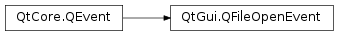

QFileOpenEvent¶
Detailed Description¶
The
PySide2.QtGui.QFileOpenEventclass provides an event that will be sent when there is a request to open a file or a URL.File open events will be sent to the
QApplication.instance()when the operating system requests that a file or URL should be opened. This is a high-level event that can be caused by different user actions depending on the user’s desktop environment; for example, double clicking on an file icon in the Finder on macOS .This event is only used to notify the application of a request. It may be safely ignored.
Note
This class is currently supported for macOS only.
macOS Example¶
In order to trigger the event on macOS , the application must be configured to let the OS know what kind of file(s) it should react on.
For example, the following
Info.plistfile declares that the application can act as a viewer for files with a PNG extension:<?xml version="1.0" encoding="UTF-8"?> <!DOCTYPE plist PUBLIC "-//Apple//DTD PLIST 1.0//EN" "http://www.apple.com/DTDs/PropertyList-1.0.dtd"> <plist version="1.0"> <dict> <key>CFBundleDocumentTypes</key> <array> <dict> <key>CFBundleTypeExtensions</key> <array> <string>png</string> </array> <key>CFBundleTypeRole</key> <string>Viewer</string> </dict> </array> </dict> </plist>The following implementation of a
PySide2.QtWidgets.QApplicationsubclass prints the path to the file that was, for example, dropped on the Dock icon of the application.#include <QApplication> #include <QFileOpenEvent> #include <QtDebug> class MyApplication : public QApplication { public: MyApplication(int &argc, char **argv) : QApplication(argc, argv) { } bool event(QEvent *event) { if (event->type() == QEvent::FileOpen) { QFileOpenEvent *openEvent = static_cast<QFileOpenEvent *>(event); qDebug() << "Open file" << openEvent->file(); } return QApplication::event(event); } };
-
class
PySide2.QtGui.QFileOpenEvent(file)¶ -
class
PySide2.QtGui.QFileOpenEvent(url) Parameters: - file – unicode
- url –
PySide2.QtCore.QUrl
Constructs a file open event for the given
file.Constructs a file open event for the given
url.
-
PySide2.QtGui.QFileOpenEvent.file()¶ Return type: unicode Returns the file that is being opened.
-
PySide2.QtGui.QFileOpenEvent.openFile(file, flags)¶ Parameters: - file –
PySide2.QtCore.QFile - flags –
PySide2.QtCore.QIODevice.OpenMode
Return type: PySide2.QtCore.boolOpens a
PySide2.QtCore.QFileon thefilereferenced by this event in the mode specified byflags. Returnstrueif successful; otherwise returnsfalse.This is necessary as some files cannot be opened by name, but require specific information stored in this event.
- file –
-
PySide2.QtGui.QFileOpenEvent.url()¶ Return type: PySide2.QtCore.QUrlReturns the url that is being opened.
© 2018 The Qt Company Ltd. Documentation contributions included herein are the copyrights of their respective owners. The documentation provided herein is licensed under the terms of the GNU Free Documentation License version 1.3 as published by the Free Software Foundation. Qt and respective logos are trademarks of The Qt Company Ltd. in Finland and/or other countries worldwide. All other trademarks are property of their respective owners.